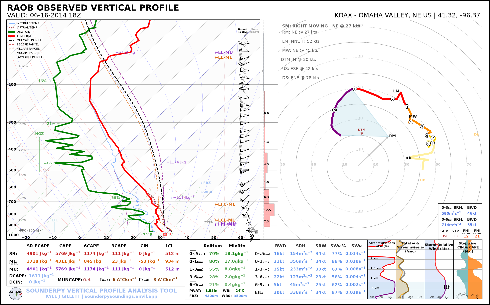
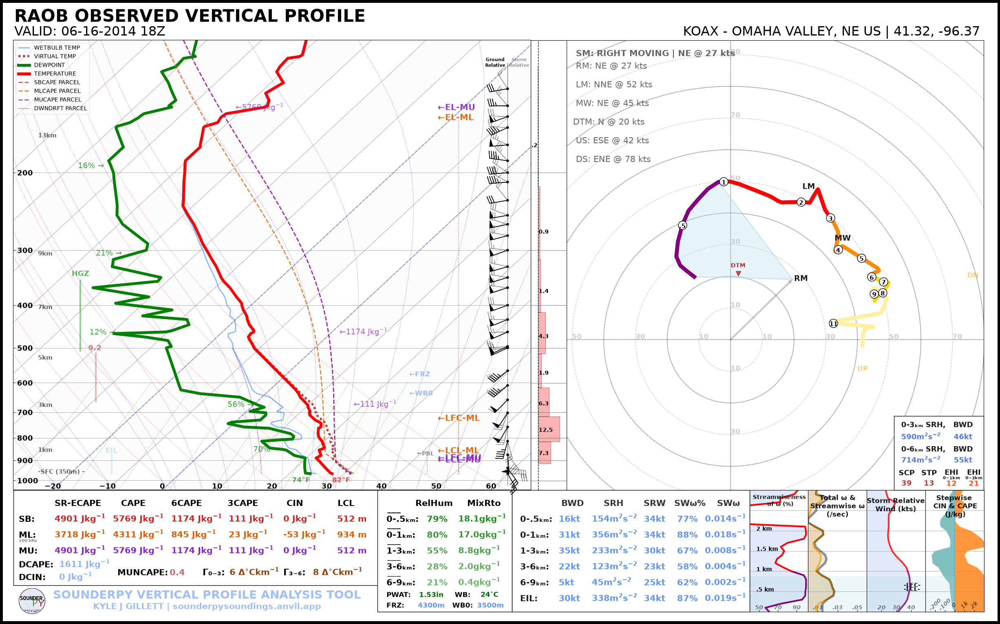
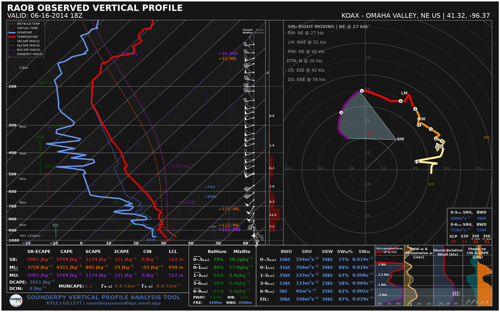
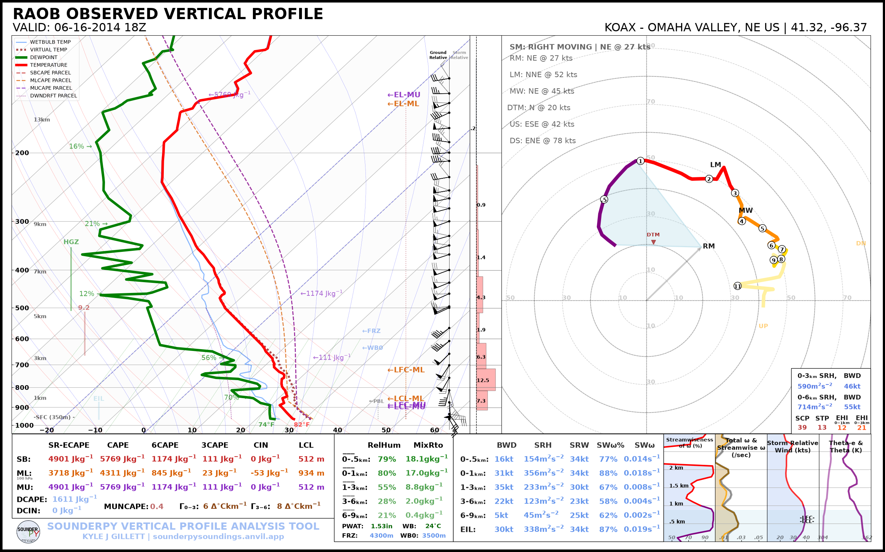
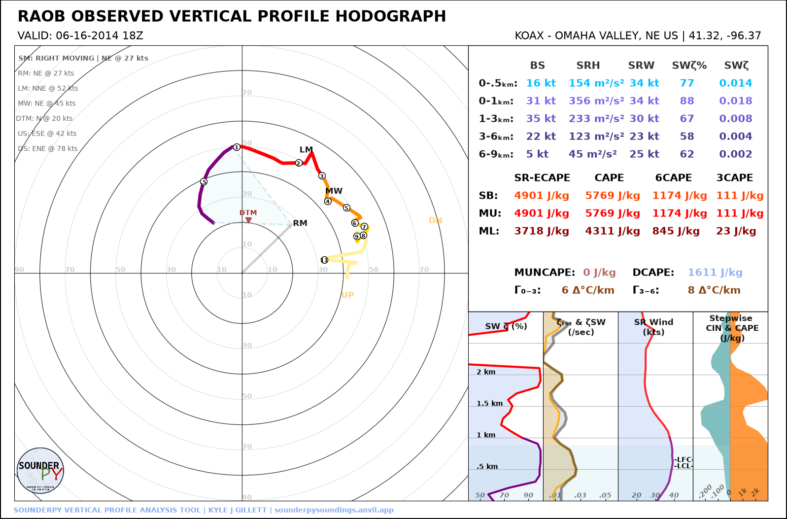
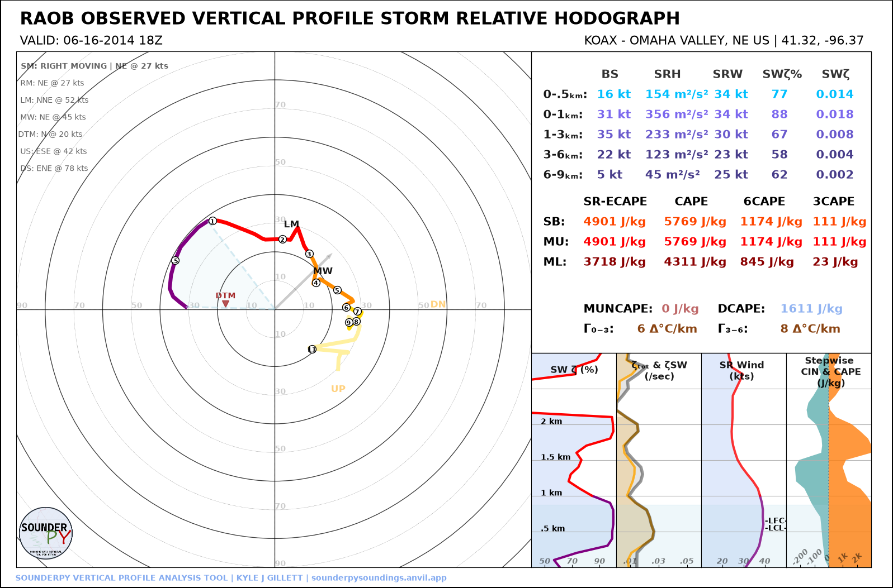
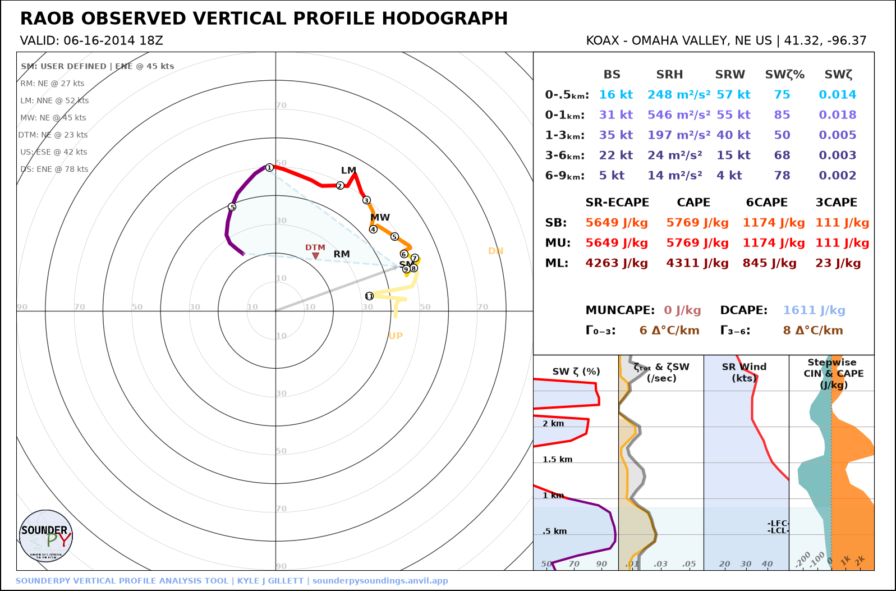
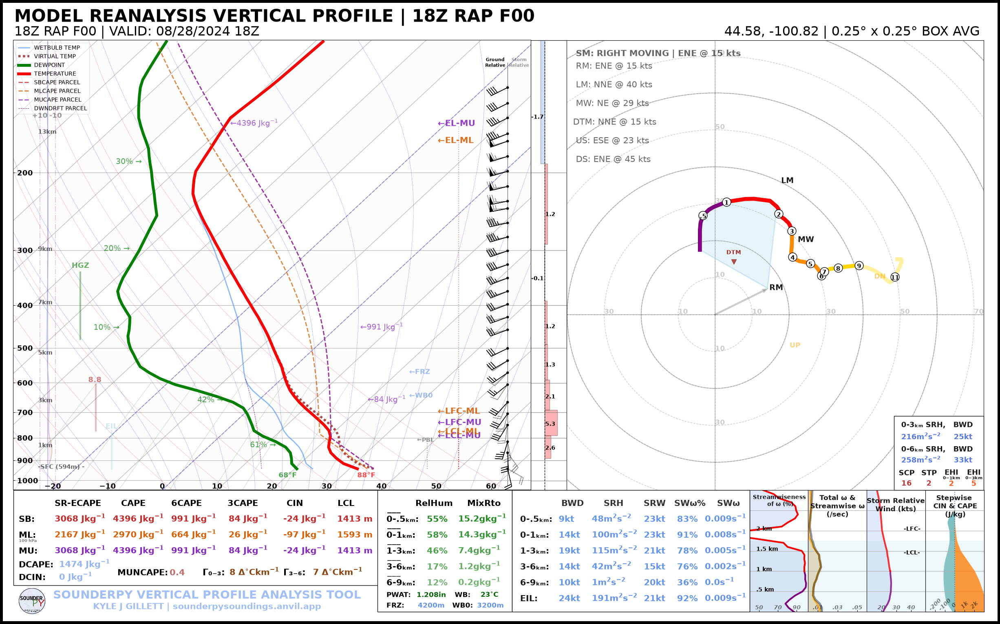
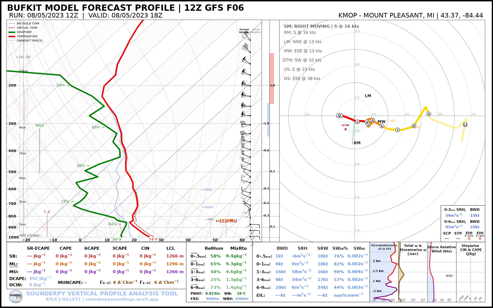

👨🍳 SounderPy Beginner’s Cookbook
A beginner-friendly collection of recipes for retrieving, analyzing, plotting, and exporting atmospheric vertical-profile data.
This notebook is designed for users who are new to SounderPy, new to atmospheric sounding analysis in Python, or simply want a quick tour of the package.
Recipes in this cookbook
Set up SounderPy
Retrieve your first observed sounding
Understand ``clean_data``
Customize a SounderPy sounding
Build and modify a hodograph
Retrieve other data sources
Calculate sounding parameters
Compare multiple profiles
Export a profile
Use the SounderPy command line
Time to learn: about 20–30 minutes
Note: Several recipes retrieve live or archived data from external services. An internet connection is required, and occasional upstream archive outages are outside SounderPy’s control.
(C) Kyle J. Gillett, University of North Dakota, 2024–2026)
Before We Get Started
You do not need to be an experienced Python programmer to use this notebook. A few terms will appear repeatedly:
Cookbook — a collection of “recipes”
Recipe — a set of steps that create a programmatic solution to a problem
Function / tool — reusable code that performs a task, such as retrieving data or building a sounding.
Argument — information passed into a function.
Keyword argument (``kwarg``) — an optional named setting passed to a function.
Dictionary — a Python object that stores values using named keys.
Alias — a shorthand name used when importing a package. We will use
spyas the alias for SounderPy.``clean_data`` — SounderPy’s common vertical-profile data structure.
Helpful resources
If you are running this notebook in Google Colab and SounderPy is not already installed, run the installation cell below.
[48]:
# Uncomment this line if SounderPy is not installed in your environment.
# %pip install -q sounderpy
Recipe 1 — Set Up SounderPy
Goal: Import SounderPy and make its public tools available in this notebook.
The conventional alias is spy:
[49]:
import sounderpy as spy
That’s all the setup we need.
Throughout the cookbook, calls such as:
spy.get_obs_data(...)
spy.build_sounding(...)
spy.build_hodograph(...)
are using functions provided by SounderPy.
Recipe 2 — Retrieve Your First Observed Sounding
Goal: Retrieve a real observed radiosonde profile and create a full SounderPy sounding.
We will use the Omaha, Nebraska (OAX) sounding from 16 June 2014 at 18 UTC, during the Pilger, Nebraska severe-weather event.
SounderPy retrieves observed radiosonde data with:
spy.get_obs_data(station, year, month, day, hour)
[ ]:
obs_data = spy.get_obs_data("OAX", "2014", "06", "16", "18", hush=True)
> OBSERVED DATA ACCESS FUNCTION
-----------------------------------
> PROFILE FOUND: OAX on 06/16/2014 at 18z | From UW
> COMPLETE --------
> RUNTIME: 00:00:02
Now build the sounding:
[ ]:
spy.build_sounding(obs_data, radar=None, map_zoom=0)
> SOUNDING PLOTTER FUNCTION
---------------------------------
> PREPARING DATA
> BUILDING SKEW-T LOG-P DIAGRAM
> BUILDING HODOGRAPH
> BUILDING MAP INSET
> BUILDING ACCESSORY PLOTS
> PLOTTING SOUNDING PARAMETERS
> FIGURE LOADING...
Ignoring fixed x limits to fulfill fixed data aspect with adjustable data limits.
Ignoring fixed y limits to fulfill fixed data aspect with adjustable data limits.
> COMPLETE --------
> RUNTIME: 00:00:16

What you learned:
get_obs_data()retrieves an observed atmospheric profile.The returned object can be passed directly into
build_sounding().radar=Nonedisables the radar inset.map_zoom=0hides the map, which keeps this first example simple and avoids unnecessary external radar/map requests.
This retrieve → plot pattern is the core SounderPy workflow.
Recipe 3 — Understand clean_data
Goal: Understand what SounderPy actually returned.
SounderPy converts supported observations, forecasts, reanalyses, aircraft profiles, and model data into a common dictionary often referred to as clean_data.
Inspect the available keys:
[52]:
obs_data.keys()
[52]:
dict_keys(['p', 'z', 'T', 'Td', 'u', 'v', 'site_info', 'titles'])
The core profile variables are typically:
Key |
Meaning |
|---|---|
|
pressure |
|
height |
|
temperature |
|
dewpoint |
|
u-component wind |
|
v-component wind |
|
profile metadata |
The meteorological arrays retain physical units through Pint/MetPy.
Let’s inspect the metadata:
[53]:
obs_data["site_info"]
[53]:
{'site-id': 'KOAX',
'site-name': 'OMAHA VALLEY',
'site-lctn': 'NE US',
'site-latlon': [41.32, -96.37],
'site-elv': np.float64(350.0),
'source': 'RAOB OBSERVED PROFILE',
'model': 'no-model',
'fcst-hour': 'no-fcst-hour',
'run-time': ['none', 'none', 'none', 'none'],
'valid-time': ['2014', '06', '16', '18']}
And look at a few values from the profile:
[54]:
print("Pressure:", obs_data["p"][:5])
print("Temperature:", obs_data["T"][:5])
print("Dewpoint:", obs_data["Td"][:5])
print("U wind:", obs_data["u"][:5])
print("V wind:", obs_data["v"][:5])
Pressure: [965.0 962.0 936.9 925.0 904.9] hectopascal
Temperature: [27.8 27.4 25.5 24.6 23.1] degree_Celsius
Dewpoint: [23.8 22.8 21.7 21.2 20.4] degree_Celsius
U wind: [-11.468656 -12.214049660704553 -17.170088628563903 -17.008599999999998 -14.360380604686835] knot
V wind: [19.864294886529652 20.327592246720886 24.521427850468996 29.45975936561601 39.45482144615117] knot
Why ``clean_data`` matters
Once a data source has been converted into this common structure, the same SounderPy plotting, calculation, and export functions can be used regardless of where the profile came from.
Conceptually:
RAOB ─────┐
RAP/RUC ──┤
BUFKIT ───┤
ACARS ────┼──> clean_data ──> calculations
WRF ──────┤ ├─> sounding
CM1 ──────┤ ├─> hodograph
custom ───┘ └─> export
Recipe 4 — Customize a SounderPy Sounding
Goal: Learn a few of the most useful build_sounding() options.
The default plot contains a large amount of information, but its appearance and layout can be customized.
A simplified parcel display
special_parcels="simple" keeps the standard SB/ML/MU CAPE parcel traces while omitting the additional MU ECAPE parcel trace.
[ ]:
spy.build_sounding(obs_data, special_parcels="simple", radar=None, map_zoom=0)
> SOUNDING PLOTTER FUNCTION
---------------------------------
> PREPARING DATA
> BUILDING SKEW-T LOG-P DIAGRAM
> BUILDING HODOGRAPH
> BUILDING MAP INSET
> BUILDING ACCESSORY PLOTS
> PLOTTING SOUNDING PARAMETERS
> FIGURE LOADING...
Ignoring fixed x limits to fulfill fixed data aspect with adjustable data limits.
Ignoring fixed y limits to fulfill fixed data aspect with adjustable data limits.
> COMPLETE --------
> RUNTIME: 00:00:03

Dark mode and color-deficiency-friendly colors
dark_mode=True changes the presentation theme.
color_blind=True changes the conventional red/green thermodynamic trace combination to a more color-deficiency-friendly presentation.
[ ]:
spy.build_sounding(obs_data, special_parcels="simple", radar=None, map_zoom=0, dark_mode=True, color_blind=True)
> SOUNDING PLOTTER FUNCTION
---------------------------------
> PREPARING DATA
> BUILDING SKEW-T LOG-P DIAGRAM
> BUILDING HODOGRAPH
> BUILDING MAP INSET
> BUILDING ACCESSORY PLOTS
> PLOTTING SOUNDING PARAMETERS
> FIGURE LOADING...
Ignoring fixed x limits to fulfill fixed data aspect with adjustable data limits.
Ignoring fixed y limits to fulfill fixed data aspect with adjustable data limits.
> COMPLETE --------
> RUNTIME: 00:00:04

Show potential-temperature traces
SounderPy can also display potential-temperature information with show_theta=True:
[ ]:
spy.build_sounding(obs_data, special_parcels="simple", radar=None, map_zoom=0, show_theta=True)
> SOUNDING PLOTTER FUNCTION
---------------------------------
> PREPARING DATA
> BUILDING SKEW-T LOG-P DIAGRAM
> BUILDING HODOGRAPH
> BUILDING MAP INSET
> BUILDING ACCESSORY PLOTS
> PLOTTING SOUNDING PARAMETERS
> FIGURE LOADING...
Ignoring fixed x limits to fulfill fixed data aspect with adjustable data limits.
Ignoring fixed y limits to fulfill fixed data aspect with adjustable data limits.
> COMPLETE --------
> RUNTIME: 00:00:02

Try it yourself
Experiment with one option at a time:
spy.build_sounding(obs_data, dark_mode=True)
spy.build_sounding(obs_data, color_blind=True)
spy.build_sounding(obs_data, map_zoom=4)
For archived cases, radar availability depends on the selected radar mode and the underlying archive. If you are learning the plotting API, radar=None is the most reliable starting point.
Recipe 5 — Build and Modify a Hodograph
Goal: Create both ground-relative and storm-relative hodographs.
A standard hodograph is created with:
[ ]:
spy.build_hodograph(obs_data, radar=None, map_zoom=0)
> HODOGRAPH PLOTTER FUNCTION --
-------------------------------
> RUNTIME: 00:00:03

Storm-relative hodograph
With sr_hodo=True, SounderPy subtracts the selected storm-motion vector from the wind profile.
Here we use the canonical right-moving storm motion:
[ ]:
spy.build_hodograph(obs_data, storm_motion="right_moving", sr_hodo=True, radar=None, map_zoom=0)
> HODOGRAPH PLOTTER FUNCTION --
-------------------------------
> RUNTIME: 00:00:03

SounderPy also accepts a custom storm motion as:
[direction_degrees, speed_knots]
For example:
[ ]:
spy.build_hodograph(obs_data, storm_motion=[250.0, 45.0], radar=None, map_zoom=0)
> HODOGRAPH PLOTTER FUNCTION --
-------------------------------
> RUNTIME: 00:00:04

What you learned:
build_hodograph()accepts the sameclean_dataobject asbuild_sounding().sr_hodo=Falsegives a ground-relative hodograph.sr_hodo=Truegives a storm-relative hodograph.Storm motion can be calculated by SounderPy or supplied by the user.
Recipe 6 — Retrieve Other Data Sources
Goal: See how the same SounderPy workflow applies to forecasts, model analyses, and aircraft observations.
You do not need to run every example to complete the cookbook.
A. RAP/RUC analysis
For RAP/RUC data, use the model key "rap-ruc".
This example retrieves a RAP analysis valid at 18 UTC 28 August 2024 near central South Dakota:
[ ]:
rap_data = spy.get_model_data("rap-ruc", [44.58, -100.82], "2024", "08", "28", "18", box_avg_size=0.25, hush=True)
> RAP/RUC REANALYSIS DATA ACCESS FUNCTION
------------------------------------------
> request: 2024-08-28 18Z | 44.58, -100.82
> requested RAP date is > 05-2021 - trying AWS
> searching AWS RAP 13-km dataset
> DATA FOUND AT: AWS RAP 13-km
> parsing complete
> temporary GRIB files will now be deleted
> COMPLETE --------
> RUNTIME: 00:00:22
[ ]:
spy.build_sounding(rap_data, special_parcels="simple", radar=None, map_zoom=0)
> SOUNDING PLOTTER FUNCTION
---------------------------------
> PREPARING DATA
> BUILDING SKEW-T LOG-P DIAGRAM
> BUILDING HODOGRAPH
> BUILDING MAP INSET
> BUILDING ACCESSORY PLOTS
> PLOTTING SOUNDING PARAMETERS
> FIGURE LOADING...
Ignoring fixed x limits to fulfill fixed data aspect with adjustable data limits.
Ignoring fixed y limits to fulfill fixed data aspect with adjustable data limits.
> COMPLETE --------
> RUNTIME: 00:00:03

Note: RAP/RUC retrieval can take longer than a radiosonde request because archived GRIB2 data must be located, downloaded, parsed, spatially sampled, and cleaned before the profile is returned.
B. BUFKIT forecast
BUFKIT provides archived model forecast profiles.
This example retrieves a GFS forecast from the 12 UTC 5 August 2023 run at KMOP, forecast hour 6:
[ ]:
bufkit_data = spy.get_bufkit_data("gfs", "KMOP", 6, "2023", "08", "05", "12", hush=True)
> BUFKIT DATA ACCESS FUNCTION
---------------------------------
> COMPLETE --------
> RUNTIME: 00:00:01
[ ]:
spy.build_sounding(bufkit_data, special_parcels="simple", radar=None, map_zoom=0)
> SOUNDING PLOTTER FUNCTION
---------------------------------
> PREPARING DATA
> BUILDING SKEW-T LOG-P DIAGRAM
> BUILDING HODOGRAPH
> BUILDING MAP INSET
> BUILDING ACCESSORY PLOTS
> PLOTTING SOUNDING PARAMETERS
> FIGURE LOADING...
Ignoring fixed x limits to fulfill fixed data aspect with adjustable data limits.
Ignoring fixed y limits to fulfill fixed data aspect with adjustable data limits.
> COMPLETE --------
> RUNTIME: 00:00:02

C. ACARS aircraft observations
ACARS profiles use a two-step workflow:
list the profiles available for a date/hour;
retrieve one profile by ID.
[ ]:
acars = spy.acars_data("2024", "05", "21", "18")
profiles = acars.list_profiles()
profiles[:10]
> LIST ACARS PROFILES FUNCTION
---------------------------------
> AVAILABLE ACARS PROFILES FOR 2024-05-21 18Z...
> COMPLETE --------
> RUNTIME: 00:00:00
['ATL_1820',
'ATL_1830',
'AUS_1820',
'AUS_1850',
'BNA_1800',
'BNA_1820',
'COS_1830',
'DAL_1810',
'DCA_1820',
'DEN_1820']
[ ]:
# Retrieve the first available profile from the returned list.
# You can replace profiles[0] with another profile ID.
acars_data = acars.get_profile(profiles[0], hush=True)
> ACARS DATA ACCESS FUNCTION
---------------------------------
> COMPLETE --------
> RUNTIME: 00:00:01
The important pattern
Despite coming from very different sources, the returned objects can all be used with the same downstream functions:
spy.build_sounding(rap_data)
spy.build_sounding(bufkit_data)
spy.build_sounding(acars_data)
That common workflow is one of SounderPy’s main design goals.
Recipe 7 — Calculate Sounding Parameters
Goal: Access SounderPy’s calculated thermodynamic and kinematic parameters directly, without relying only on the values printed on a figure.
Use sounding_params():
[ ]:
general, thermo, kinem, intrp = spy.sounding_params(obs_data, storm_motion="right_moving").calc()
The calculation returns four dictionaries:
general— general profile quantities;thermo— thermodynamic parameters;kinem— kinematic parameters;intrp— interpolated profile data used by many calculations.
Let’s inspect a few common severe-weather parameters:
[68]:
print("MLCAPE:", thermo["mlcape"])
print("MUCAPE:", thermo["mucape"])
print("MU ECAPE:", thermo["mu_ecape"])
print("0–1 km SRH:", kinem["srh_0_to_1000"])
print("0–3 km SRH:", kinem["srh_0_to_3000"])
print("0–6 km shear:", kinem["shear_0_to_6000"])
print("Effective-layer STP:", kinem["eil_stp"])
MLCAPE: 4311.201116886886
MUCAPE: 5769.720582789748
MU ECAPE: 4901.590318796767
0–1 km SRH: 356.7020447745256
0–3 km SRH: 590.2701517549962
0–6 km shear: 55.931652001498804
Effective-layer STP: 13.013753182286617
Try it yourself
Explore the available keys:
thermo.keys()
kinem.keys()
general.keys()
This is often the easiest way to discover which calculated fields are available for further analysis.
Recipe 8 — Compare Multiple Profiles
Goal: Use build_composite() to compare the evolution of profiles through time.
Instead of comparing unrelated locations, we’ll retrieve three observations from the same station around the Pilger event:
OAX — 12 UTC 16 June 2014
OAX — 18 UTC 16 June 2014
OAX — 00 UTC 17 June 2014
[ ]:
oax_12z = spy.get_obs_data("OAX", "2014", "06", "16", "12", hush=True)
oax_18z = obs_data
oax_00z = spy.get_obs_data("OAX", "2014", "06", "17", "00", hush=True)
> OBSERVED DATA ACCESS FUNCTION
-----------------------------------
> PROFILE FOUND: OAX on 06/16/2014 at 12z | From UW
> COMPLETE --------
> RUNTIME: 00:00:08
> OBSERVED DATA ACCESS FUNCTION
-----------------------------------
> PROFILE FOUND: OAX on 06/17/2014 at 00z | From UW
> COMPLETE --------
> RUNTIME: 00:00:05
[ ]:
data_list = [oax_12z, oax_18z, oax_00z]
spy.build_composite(data_list, shade_between=False, cmap="viridis")
> COMPOSITE SOUNDING FUNCTION
-------------------------------
Ignoring fixed y limits to fulfill fixed data aspect with adjustable data limits.
> COMPLETE --------
> RUNTIME: 00:00:01

Composite soundings are useful for examining:
temporal evolution;
forecast-versus-observation differences;
analog comparisons;
model-to-model differences;
sensitivity experiments.
You can also specify individual colors, line widths, line styles, and alpha values with colors_to_use, lw_to_use, ls_to_use, and alphas_to_use.
Recipe 9 — Export a Profile
Goal: Write SounderPy clean_data to a file for use outside the package.
CSV
[ ]:
spy.to_file("csv", obs_data, filename="oax_20140616_18z.csv")
SounderPy can also export SHARPpy and CM1 formats:
spy.to_file(
"sharppy",
obs_data,
filename="oax_20140616_18z.snd",
)
spy.to_file(
"cm1",
obs_data,
filename="input_sounding",
)
For CM1 export, convert_to_AGL=True is the default and converts height to above-ground level.
Recipe 10 — Use the SounderPy Command Line
Goal: See how many of the same workflows can be performed without writing a Python script.
SounderPy 3.2 includes a command-line interface.
From a terminal:
sounderpy --help
Retrieve the same OAX observation:
sounderpy obs OAX 2014-06-16 18
Create and save a sounding:
sounderpy obs OAX 2014-06-16 18 \
--plot sounding \
--map-zoom 0 \
--plot-file oax_sounding.png
Export the profile:
sounderpy obs OAX 2014-06-16 18 \
--output oax.csv
Return machine-readable JSON:
sounderpy obs OAX 2014-06-16 18 --json
The CLI is especially useful for shell scripts, quick checks, batch workflows, and users who do not need a full Python notebook.
Troubleshooting Tips
A retrieval fails
SounderPy depends on several external archives and services. If a request that previously worked suddenly fails, the upstream data provider may be temporarily unavailable.
Try the request again later and check the SounderPy documentation for source-specific availability notes.
A plot takes longer than expected
Full SounderPy plots perform many calculations and may also request radar/map data. For a lightweight workflow, use:
spy.build_sounding(
data,
special_parcels="simple",
radar=None,
map_zoom=0,
)
ECAPE or a storm-relative quantity is unavailable
Some calculations require sufficient vertical coverage, valid winds, and a valid storm-motion solution. Sparse or incomplete profiles may not support every diagnostic.
A model profile differs from a nearby observation
That does not necessarily indicate an error. Model profiles are gridded, spatially representative analyses or forecasts, while radiosondes are observations that drift through space and time.
🎉 You Finished the SounderPy Beginner’s Cookbook!
You now know how to:
retrieve observed atmospheric profiles;
understand SounderPy’s
clean_datastructure;build and customize soundings;
create ground-relative and storm-relative hodographs;
retrieve RAP/RUC, BUFKIT, and ACARS data;
calculate thermodynamic and kinematic parameters;
compare multiple profiles;
export SounderPy data;
use the SounderPy command line.
Where to go next
- Getting Started:
- Full Documentation:
Thanks for using SounderPy! 🌩️